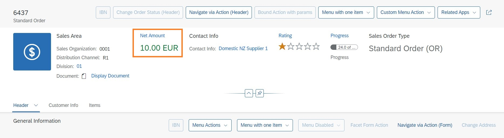

If you add a UI.ReferenceFacet that points to UI.DataPoint, the title and value of the UI.DataPoint are rendered as follows:

<Annotation Term="UI.DataPoint" Qualifier="ProductCategory">
<Record>
<PropertyValue Property="Value" Path="ProductCategory"/>
<PropertyValue Property="Title" String="{@i18n>ProductCategory}"/>
</Record>
</Annotation>
The data point can also be colored based on criticality.
<Annotation Term="UI.DataPoint" Qualifier="StockAvailability">
<Record Type="UI.DataPointType">
<PropertyValue Property="Title" String="Availability" />
<PropertyValue Property="Value" Path="stock/availability" />
<PropertyValue Property="Criticality" Path="stock/availability"/>
</Record>
</Annotation>
You can also enable in-page and external navigation from a data point. For more information, see Navigation from Header Facets.